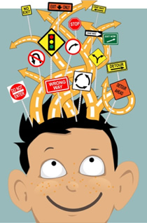

Focus

Learn: Focus and the Final Barrier
We’ve arrived at the Act stage of the think → feel → act cycle.
In the first module, we tackled thinking—removing limiting beliefs and mental patterns that held us back. In the second module, we explored feeling—learning to manage and sit with difficult emotions. Now that we have cleared some mental clutter, we’re ready to act. Specifically, we’re going to strengthen our work ethic by learning how to remove distractions and focus.
Before we worry about external distractions—like your phone buzzing or noise around you—we need to deal with what’s happening inside. Internal distractions like worry, craving, or overstimulation are often the final layer blocking our ability to act with focus.
Momentum
In the physical world, momentum is the motion of an object. An object in motion stays in motion unless acted upon by another force.
Your attention works the same way.
If you’ve been scrolling social media or playing a game, your brain has “momentum” in that direction. The scientific name is cognitive inertia; we’re going to refer to it as mental momentum. That mental energy makes it easier to keep doing that thing and harder to switch to something else—like doing your homework or writing a paper.
The more absorbed you are in one activity, the more mental effort it takes to shift to another.
Imagine your attention like a rocket ship. Once launched, it keeps moving until a force redirects it. But here’s the catch: rockets don’t have brakes like cars. To stop, they have to flip around and fire their thrusters in the opposite direction.
That’s what we have to do with our minds—we can’t just “stop” being distracted. We need to intentionally redirect that mental momentum.